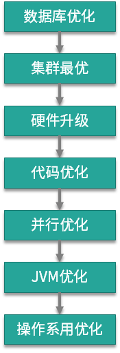

- 00 开篇词：JVM，一块难啃的骨头.md.html
- 01 一探究竟：为什么需要 JVM？它处在什么位置？.md.html
- 02 大厂面试题：你不得不掌握的 JVM 内存管理.md.html
- 03 大厂面试题：从覆盖 JDK 的类开始掌握类的加载机制.md.html
- 04 动手实践：从栈帧看字节码是如何在 JVM 中进行流转的.md.html
- 05 大厂面试题：得心应手应对 OOM 的疑难杂症.md.html
- 06 深入剖析：垃圾回收你真的了解吗？（上）.md.html
- 07 深入剖析：垃圾回收你真的了解吗？（下）.md.html
- 08 大厂面试题：有了 G1 还需要其他垃圾回收器吗？.md.html
- 09 案例实战：亿级流量高并发下如何进行估算和调优.md.html
- 10 第09讲：案例实战：面对突如其来的 GC 问题如何下手解决.md.html
- 11 第10讲：动手实践：自己模拟 JVM 内存溢出场景.md.html
- 12 第11讲：动手实践：遇到问题不要慌，轻松搞定内存泄漏.md.html
- 13 工具进阶：如何利用 MAT 找到问题发生的根本原因.md.html
- 14 动手实践：让面试官刮目相看的堆外内存排查.md.html
- 15 预警与解决：深入浅出 GC 监控与调优.md.html
- 16 案例分析：一个高死亡率的报表系统的优化之路.md.html
- 17 案例分析：分库分表后，我的应用崩溃了.md.html
- 18 动手实践：从字节码看方法调用的底层实现.md.html
- 19 大厂面试题：不要搞混 JMM 与 JVM.md.html
- 20 动手实践：从字节码看并发编程的底层实现.md.html
- 21 动手实践：不为人熟知的字节码指令.md.html
- 22 深入剖析：如何使用 Java Agent 技术对字节码进行修改.md.html
- 23 动手实践：JIT 参数配置如何影响程序运行？.md.html
- 24 案例分析：大型项目如何进行性能瓶颈调优？.md.html
- 25 未来：JVM 的历史与展望.md.html
- 26 福利：常见 JVM 面试题补充.md.html
24 案例分析：大型项目如何进行性能瓶颈调优？
本课时我们主要分享一个实践案例，即大型项目如何进行性能瓶颈调优，这也是对前面所学的知识进行总结。
性能调优是一个比较大且比较模糊的话题。在大型项目中，既有分布式的交互式调优问题，也有纯粹的单机调优问题。由于我们的课程主要讲解 JVM 相关的知识点，重点关注 JVM 的调优、故障或者性能瓶颈方面的问题排查，所以对于分布式应用中的影响因素，这里不过多介绍。
优化层次
下面是我总结的一张关于优化层次的图，箭头表示优化时需考虑的路径，但也不总是这样。当一个系统出现问题的时候，研发一般不会想要立刻优化 JVM，或者优化操作系统，会尝试从最高层次上进行问题的解决：解决最主要的瓶颈点。

数据库优化： 数据库是最容易成为瓶颈的组件，研发会从 SQL 优化或者数据库本身去提高它的性能。如果瓶颈依然存在，则会考虑分库分表将数据打散，如果这样也没能解决问题，则可能会选择缓存组件进行优化。这个过程与本课时相关的知识点，可以使用 jstack 获取阻塞的执行栈，进行辅助分析。
集群最优：存储节点的问题解决后，计算节点也有可能发生问题。一个集群系统如果获得了水平扩容的能力，就会给下层的优化提供非常大的时间空间，这也是弹性扩容的魅力所在。我接触过一个服务，由最初的 3 个节点，扩容到最后的 200 多个节点，但由于人力问题，服务又没有什么新的需求，下层的优化就一直被搁置着。
硬件升级：水平扩容不总是有效的，原因在于单节点的计算量比较集中，或者 JVM 对内存的使用超出了宿主机的承载范围。在动手进行代码优化之前，我们会对节点的硬件配置进行升级。升级容易，降级难，降级需要依赖代码和调优层面的优化。
代码优化：出于成本的考虑，上面的这些问题，研发团队并不总是坐视不管。代码优化是提高性能最有效的方式，但需要收集一些数据，这个过程可能是服务治理，也有可能是代码流程优化。我在第 21 课时介绍的 JavaAgent 技术，会无侵入的收集一些 profile 信息，供我们进行决策。像 Sonar 这种质量监控工具，也可以在此过程中帮助到我们。
并行优化：并行优化的对象是这样一种接口，它占用的资源不多，计算量也不大，就是速度太慢。所以我们通常使用 ContDownLatch 对需要获取的数据进行并行处理，效果非常不错，比如在 200ms 内返回对 50 个耗时 100ms 的下层接口的调用。
JVM 优化：虽然对 JVM 进行优化，有时候会获得巨大的性能提升，但在 JVM 不发生问题时，我们一般不会想到它。原因就在于，相较于上面 5 层所达到的效果来说，它的优化效果有限。但在代码优化、并行优化、JVM 优化的过程中，JVM 的知识却起到了关键性的作用，是一些根本性的影响因素。
操作系统优化：操作系统优化是解决问题的杀手锏，比如像 HugePage、Luma、“CPU 亲和性”这种比较底层的优化。但就计算节点来说，对操作系统进行优化并不是很常见。运维在背后会做一些诸如文件句柄的调整、网络参数的修改，这对于我们来说就已经够用了。
虽然本课程是针对比较底层的 JVM，但我还是想谈一下一个研发对技术体系的整体演进方向。
首先，掌握了比较底层、基础的东西后，在了解一些比较高层的设计时，就能花更少的时间，这方面的知识有：操作系统、网络、多线程、编译原理，以及一门感兴趣的开发语言。对 Java 体系来说，毫无疑问就是 Java 语言和 JVM。
其次，知识体系还要看实用性，比如你熟知编译原理，虽然 JIT 很容易入门，但如果不做相关的开发，这并没有什么实际作用。
最后，现代分布式系统在技术上总是一个权衡的结果（比如 CAP）。在分析一些知识点和面试题的时候，也要看一下哪些是权衡的结果，哪些务必是准确的。整体上达到次优，局部上达到最优，就是我们要追寻的结果。
代码优化、JVM 的调优，以及单机的故障排查，就是一种局部上的寻优过程，也是一个合格的程序员必须要掌握的技能。
JVM 调优
由于 JVM 一直处在变化之中，所以一些参数的配置并不总是有效的，有时候你加入一个参数，“感觉上”运行速度加快了，但通过
-XX:+PrintFlagsFinal 来查看，却发现这个参数默认就是这样，比如第 10 课时提到的 UseAdaptiveSizePolicy。所以，在不同的 JVM 版本上，不同的垃圾回收器上，要先看一下这个参数默认是什么，不要轻信他人的建议。
java -XX:+PrintFlagsFinal -XX:+UseG1GC 2>&1 | grep UseAdaptiveSizePolicy
内存区域大小
首先要调整的，就是各个分区的大小，不过这也要分垃圾回收器，我们来看一些全局参数及含义。
- -XX:+UseG1GC：用于指定 JVM 使用的垃圾回收器为 G1，尽量不要靠默认值去保证，要显式的指定一个。
- -Xmx：设置堆的最大值，一般为操作系统的 2/3 大小。
- -Xms：设置堆的初始值，一般设置成和 Xmx 一样的大小来避免动态扩容。
- -Xmn：表示年轻代的大小，默认新生代占堆大小的 1/3。高并发、对象快消亡场景可适当加大这个区域，对半，或者更多，都是可以的。但是在 G1 下，就不用再设置这个值了，它会自动调整。
- -XX:MaxMetaspaceSize：用于限制元空间的大小，一般 256M 足够了，这一般和初始大小 -XX:MetaspaceSize 设置成一样的。
- -XX:MaxDirectMemorySize：用于设置直接内存的最大值，限制通过 DirectByteBuffer 申请的内存。
- -XX:ReservedCodeCacheSize：用于设置 JIT 编译后的代码存放区大小，如果观察到这个值有限制，可以适当调大，一般够用即可。
- -Xss：用于设置栈的大小，默认为 1M，已经足够用了。
内存调优
- -XX:+AlwaysPreTouch：表示在启动时就把参数里指定的内存全部初始化，启动时间会慢一些，但运行速度会增加。
- -XX:SurvivorRatio：默认值为 8，表示伊甸区和幸存区的比例。
- -XX:MaxTenuringThreshold：这个值在 CMS 下默认为 6，G1 下默认为 15，这个值和我们前面提到的对象提升有关，改动效果会比较明显。对象的年龄分布可以使用 -XX:+PrintTenuringDistribution 打印，如果后面几代的大小总是差不多，证明过了某个年龄后的对象总能晋升到老生代，就可以把晋升阈值设小。
- PretenureSizeThreshold：表示超过一定大小的对象，将直接在老年代分配，不过这个参数用的不是很多。
其他容量的相关参数可以参考其他课时，但不建议随便更改。
垃圾回收器优化
接下来看一下主要的垃圾回收器。
CMS 垃圾回收器
- -XX:+UseCMSInitiatingOccupancyOnly：这个参数需要加上 **-**XX:CMSInitiatingOccupancyFraction，注意后者需要和前者一块配合才能完成工作，它们指定了 MajorGC 的发生时机。
- -XX:ExplicitGCInvokesConcurrent：当代码里显示调用了 System.gc()，实际上是想让回收器进行 FullGC，如果发生这种情况，则使用这个参数开始并行 FullGC，建议加上这个参数。
- -XX:CMSFullGCsBeforeCompaction：这个参数的默认值为 0，代表每次 FullGC 都对老生代进行碎片整理压缩，建议保持默认。
- -XX:CMSScavengeBeforeRemark：表示开启或关闭在 CMS 重新标记阶段之前的清除（YGC）尝试，它可以降低 remark 时间，建议加上。
- -XX:+ParallelRefProcEnabled：可以用来并行处理 Reference，以加快处理速度，缩短耗时，具体用法见第 15 课时。
G1 垃圾回收器
- -XX:MaxGCPauseMillis：用于设置目标停顿时间，G1 会尽力达成。
- -XX:G1HeapRegionSize：用于设置小堆区大小，这个值为 2 的次幂，不要太大，也不要太小，如果实在不知道如何设置，建议保持默认。
- -XX:InitiatingHeapOccupancyPercent：表示当整个堆内存使用达到一定比例（默认是 45%），并发标记阶段 就会被启动。
- -XX:ConcGCThreads：表示并发垃圾收集器使用的线程数量，默认值随 JVM 运行的平台不同而变动，不建议修改。
其他参数优化
- -XX:AutoBoxCacheMax：用于加大 IntegerCache，具体原因可参考第 20 课时。
- -Djava.security.egd=file:/dev/./urandom：这个参数使用 urandom 随机生成器，在进行随机数获取时，速度会更快。
- -XX:-OmitStackTraceInFastThrow：用于减少异常栈的输出，并进行合并。虽然会对调试有一定的困扰，但能在发生异常时显著增加性能。
存疑优化
- **-XX:-UseBiasedLocking：**用于取消偏向锁（第 19 课时），理论上在高并发下会增加效率，这个需要实际进行观察，在无法判断的情况下，不需要配置。
- **JIT 参数：**这是我们在第 22 课时多次提到的 JIT 编译参数，这部分最好不要乱改，会产生意想不到的问题。
GC 日志
这部分我们在第 9 课时进行了详细的介绍，在此不再重复。
下面来看一个在 G1 垃圾回收器运行的 JVM 启动命令。
java \
-XX:+UseG1GC \
-XX:MaxGCPauseMillis=100 \
-XX:InitiatingHeapOccupancyPercent=45 \
-XX:G1HeapRegionSize=16m \
-XX:+ParallelRefProcEnabled \
-XX:MaxTenuringThreshold=3 \
-XX:+AlwaysPreTouch \
-Xmx5440M \
-Xms5440M \
-XX:MaxMetaspaceSize=256M \
-XX:MetaspaceSize=256M \
-XX:MaxDirectMemorySize=100M \
-XX:ReservedCodeCacheSize=268435456 \
-XX:-OmitStackTraceInFastThrow \
-Djava.security.egd=file:/dev/./urandom \
-verbose:gc \
-XX:+PrintGCDetails \
-XX:+PrintGCDateStamps \
-XX:+PrintGCApplicationStoppedTime \
-XX:+PrintGCApplicationConcurrentTime \
-XX:+PrintTenuringDistribution \
-XX:+PrintClassHistogramBeforeFullGC \
-XX:+PrintClassHistogramAfterFullGC \
-Xloggc:/tmp/logs/gc_%p.log \
-XX:+HeapDumpOnOutOfMemoryError \
-XX:HeapDumpPath=/tmp/logs \
-XX:ErrorFile=/tmp/logs/hs_error_pid%p.log \
-Djava.rmi.server.hostname=127.0.0.1 \
-Dcom.sun.management.jmxremote \
-Dcom.sun.management.jmxremote.port=14000 \
-Dcom.sun.management.jmxremote.ssl=false \
-Dcom.sun.management.jmxremote.authenticate=false \
-javaagent:/opt/test.jar \
MainRun
故障排查
有需求才需要优化，不要为了优化而优化。一般来说，上面提到的这些 JVM 参数，基本能够保证我们的应用安全，如果想要更进一步、更专业的性能提升，就没有什么通用的法则了。
打印详细的 GCLog，能够帮助我们了解到底是在哪一步骤发生了问题，然后才能对症下药。使用 gceasy.io 这样的线上工具，能够方便的分析到结果，但一些偏门的 JVM 参数修改，还是需要进行详细的验证。
一次或者多次模拟性的压力测试是必要的，能够让我们提前发现这些优化点。
我们花了非常大的篇幅，来讲解 JVM 中故障排查的问题，这也是和我们工作中联系最紧密的话题。
JVM 故障会涉及到内存问题和计算问题，其中内存问题占多数。除了程序计数器，JVM 内存里划分每一个区域，都有溢出的可能，最常见的就是堆溢出。使用 jmap 可以 dump 一份内存，然后使用 MAT 工具进行具体原因的分析。
对堆外内存的排查需要较高的技术水平，我们在第 13 课时进行了详细的讲解。当你发现进程占用的内存资源比使用 Xmx 设置得要多，那么不要忘了这一环。
使用 jstack 可以获取 JVM 的执行栈，并且能够看到线程的一些阻塞状态，这部分可以使用 arthas 进行瞬时态的获取，定位到瞬时故障。另外，一个完善的监控系统能够帮我们快速定位问题，包括操作系统的监控、JVM 的监控等。
代码、JVM 优化和故障排查是一个持续优化的过程，只有更优、没有最优。如何在有限的项目时间内，最高效的完成工作，才是我们所需要的。
小结
本课时对前面的课程内容做了个简单的总结，从 7 个层面的优化出发，简要的谈了一下可能的优化过程，然后详细地介绍了一些常见的优化参数。
JVM 的优化效果是有限的，但它是理论的基础，代码优化和参数优化都需要它的指导。同时，有非常多的工具能够帮我们定位到问题。
偏门的优化参数可能有效，但不总是有效。实际上，从 CMS 到 G1，再到 ZGC，关于 GC 优化的配置参数也越来越少，但协助排查问题的工具却越来越多。在大多数场景下，JVM 已经能够达到开箱即用的高性能效果，这也是一个虚拟机所追求的最终目标。